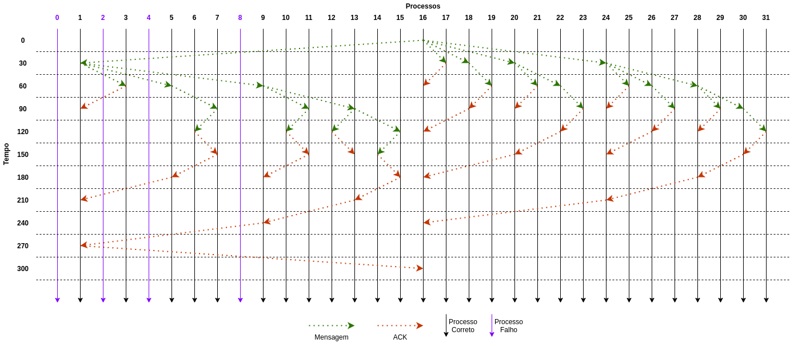

Voltar
Trabalho Prático 3 - Teste 5
Em um sistema com 32 processos, o broadcast é iniciado pelo processo 16 e estão falhos 0, 2, 4 e 8. Mostre
claramente quais mensagens são transmitidas.
O programa foi executado com os seguintes parâmetros:
{% highlight bash %}
./bebcast 16 32 0:1,2:1,4:1,8:1
{% endhighlight %}
A evolução do broadcast ao longo do tempo pode ser visualizado abaixo:

O log deste teste pode ser visualizado abaixo:
› Log do teste 5 (clique para expandir)
{% highlight plaintext %}
Este programa foi executado para N=32 processos
O tempo maximo de simulacao e de 310
A latencia entre as mensagens e o intervalo de testes e de 30
A origem do broadcast e o processo 16
Os estados inicias de cada processo sao:
State do processo 0: [1, -1, -1, -1, -1, -1, -1, -1, -1, -1, -1, -1, -1, -1, -1, -1, -1, -1, -1, -1, -1, -1, -1, -1, -1, -1, -1, -1, -1, -1, -1, -1]
State do processo 1: [1, 0, 1, 0, 1, 0, 0, 0, 1, 0, 0, 0, 0, 0, 0, 0, 0, 0, 0, 0, 0, 0, 0, 0, 0, 0, 0, 0, 0, 0, 0, 0]
State do processo 2: [-1, -1, 1, -1, -1, -1, -1, -1, -1, -1, -1, -1, -1, -1, -1, -1, -1, -1, -1, -1, -1, -1, -1, -1, -1, -1, -1, -1, -1, -1, -1, -1]
State do processo 3: [1, 0, 1, 0, 1, 0, 0, 0, 1, 0, 0, 0, 0, 0, 0, 0, 0, 0, 0, 0, 0, 0, 0, 0, 0, 0, 0, 0, 0, 0, 0, 0]
State do processo 4: [-1, -1, -1, -1, 1, -1, -1, -1, -1, -1, -1, -1, -1, -1, -1, -1, -1, -1, -1, -1, -1, -1, -1, -1, -1, -1, -1, -1, -1, -1, -1, -1]
State do processo 5: [1, 0, 1, 0, 1, 0, 0, 0, 1, 0, 0, 0, 0, 0, 0, 0, 0, 0, 0, 0, 0, 0, 0, 0, 0, 0, 0, 0, 0, 0, 0, 0]
State do processo 6: [1, 0, 1, 0, 1, 0, 0, 0, 1, 0, 0, 0, 0, 0, 0, 0, 0, 0, 0, 0, 0, 0, 0, 0, 0, 0, 0, 0, 0, 0, 0, 0]
State do processo 7: [1, 0, 1, 0, 1, 0, 0, 0, 1, 0, 0, 0, 0, 0, 0, 0, 0, 0, 0, 0, 0, 0, 0, 0, 0, 0, 0, 0, 0, 0, 0, 0]
State do processo 8: [-1, -1, -1, -1, -1, -1, -1, -1, 1, -1, -1, -1, -1, -1, -1, -1, -1, -1, -1, -1, -1, -1, -1, -1, -1, -1, -1, -1, -1, -1, -1, -1]
State do processo 9: [1, 0, 1, 0, 1, 0, 0, 0, 1, 0, 0, 0, 0, 0, 0, 0, 0, 0, 0, 0, 0, 0, 0, 0, 0, 0, 0, 0, 0, 0, 0, 0]
State do processo 10: [1, 0, 1, 0, 1, 0, 0, 0, 1, 0, 0, 0, 0, 0, 0, 0, 0, 0, 0, 0, 0, 0, 0, 0, 0, 0, 0, 0, 0, 0, 0, 0]
State do processo 11: [1, 0, 1, 0, 1, 0, 0, 0, 1, 0, 0, 0, 0, 0, 0, 0, 0, 0, 0, 0, 0, 0, 0, 0, 0, 0, 0, 0, 0, 0, 0, 0]
State do processo 12: [1, 0, 1, 0, 1, 0, 0, 0, 1, 0, 0, 0, 0, 0, 0, 0, 0, 0, 0, 0, 0, 0, 0, 0, 0, 0, 0, 0, 0, 0, 0, 0]
State do processo 13: [1, 0, 1, 0, 1, 0, 0, 0, 1, 0, 0, 0, 0, 0, 0, 0, 0, 0, 0, 0, 0, 0, 0, 0, 0, 0, 0, 0, 0, 0, 0, 0]
State do processo 14: [1, 0, 1, 0, 1, 0, 0, 0, 1, 0, 0, 0, 0, 0, 0, 0, 0, 0, 0, 0, 0, 0, 0, 0, 0, 0, 0, 0, 0, 0, 0, 0]
State do processo 15: [1, 0, 1, 0, 1, 0, 0, 0, 1, 0, 0, 0, 0, 0, 0, 0, 0, 0, 0, 0, 0, 0, 0, 0, 0, 0, 0, 0, 0, 0, 0, 0]
State do processo 16: [1, 0, 1, 0, 1, 0, 0, 0, 1, 0, 0, 0, 0, 0, 0, 0, 0, 0, 0, 0, 0, 0, 0, 0, 0, 0, 0, 0, 0, 0, 0, 0]
State do processo 17: [1, 0, 1, 0, 1, 0, 0, 0, 1, 0, 0, 0, 0, 0, 0, 0, 0, 0, 0, 0, 0, 0, 0, 0, 0, 0, 0, 0, 0, 0, 0, 0]
State do processo 18: [1, 0, 1, 0, 1, 0, 0, 0, 1, 0, 0, 0, 0, 0, 0, 0, 0, 0, 0, 0, 0, 0, 0, 0, 0, 0, 0, 0, 0, 0, 0, 0]
State do processo 19: [1, 0, 1, 0, 1, 0, 0, 0, 1, 0, 0, 0, 0, 0, 0, 0, 0, 0, 0, 0, 0, 0, 0, 0, 0, 0, 0, 0, 0, 0, 0, 0]
State do processo 20: [1, 0, 1, 0, 1, 0, 0, 0, 1, 0, 0, 0, 0, 0, 0, 0, 0, 0, 0, 0, 0, 0, 0, 0, 0, 0, 0, 0, 0, 0, 0, 0]
State do processo 21: [1, 0, 1, 0, 1, 0, 0, 0, 1, 0, 0, 0, 0, 0, 0, 0, 0, 0, 0, 0, 0, 0, 0, 0, 0, 0, 0, 0, 0, 0, 0, 0]
State do processo 22: [1, 0, 1, 0, 1, 0, 0, 0, 1, 0, 0, 0, 0, 0, 0, 0, 0, 0, 0, 0, 0, 0, 0, 0, 0, 0, 0, 0, 0, 0, 0, 0]
State do processo 23: [1, 0, 1, 0, 1, 0, 0, 0, 1, 0, 0, 0, 0, 0, 0, 0, 0, 0, 0, 0, 0, 0, 0, 0, 0, 0, 0, 0, 0, 0, 0, 0]
State do processo 24: [1, 0, 1, 0, 1, 0, 0, 0, 1, 0, 0, 0, 0, 0, 0, 0, 0, 0, 0, 0, 0, 0, 0, 0, 0, 0, 0, 0, 0, 0, 0, 0]
State do processo 25: [1, 0, 1, 0, 1, 0, 0, 0, 1, 0, 0, 0, 0, 0, 0, 0, 0, 0, 0, 0, 0, 0, 0, 0, 0, 0, 0, 0, 0, 0, 0, 0]
State do processo 26: [1, 0, 1, 0, 1, 0, 0, 0, 1, 0, 0, 0, 0, 0, 0, 0, 0, 0, 0, 0, 0, 0, 0, 0, 0, 0, 0, 0, 0, 0, 0, 0]
State do processo 27: [1, 0, 1, 0, 1, 0, 0, 0, 1, 0, 0, 0, 0, 0, 0, 0, 0, 0, 0, 0, 0, 0, 0, 0, 0, 0, 0, 0, 0, 0, 0, 0]
State do processo 28: [1, 0, 1, 0, 1, 0, 0, 0, 1, 0, 0, 0, 0, 0, 0, 0, 0, 0, 0, 0, 0, 0, 0, 0, 0, 0, 0, 0, 0, 0, 0, 0]
State do processo 29: [1, 0, 1, 0, 1, 0, 0, 0, 1, 0, 0, 0, 0, 0, 0, 0, 0, 0, 0, 0, 0, 0, 0, 0, 0, 0, 0, 0, 0, 0, 0, 0]
State do processo 30: [1, 0, 1, 0, 1, 0, 0, 0, 1, 0, 0, 0, 0, 0, 0, 0, 0, 0, 0, 0, 0, 0, 0, 0, 0, 0, 0, 0, 0, 0, 0, 0]
State do processo 31: [1, 0, 1, 0, 1, 0, 0, 0, 1, 0, 0, 0, 0, 0, 0, 0, 0, 0, 0, 0, 0, 0, 0, 0, 0, 0, 0, 0, 0, 0, 0, 0]
******************************************
==========================================
Executando processo 16 no tempo 0 [BEBCAST]
Iniciando broadcast com origem 16
Mensagem entregue pelo processo 16
Mensagem enviada do processo 16 para o processo 17 com cluster 1
Mensagem enviada do processo 16 para o processo 18 com cluster 2
Mensagem enviada do processo 16 para o processo 20 com cluster 3
Mensagem enviada do processo 16 para o processo 24 com cluster 4
Mensagem enviada do processo 16 para o processo 1 com cluster 5
==========================================
Executando processo 0 no tempo 30 [TEST]
==========================================
Executando processo 1 no tempo 30 [TEST]
==========================================
Executando processo 2 no tempo 30 [TEST]
==========================================
Executando processo 3 no tempo 30 [TEST]
==========================================
Executando processo 4 no tempo 30 [TEST]
==========================================
Executando processo 5 no tempo 30 [TEST]
==========================================
Executando processo 6 no tempo 30 [TEST]
==========================================
Executando processo 7 no tempo 30 [TEST]
==========================================
Executando processo 8 no tempo 30 [TEST]
==========================================
Executando processo 9 no tempo 30 [TEST]
==========================================
Executando processo 10 no tempo 30 [TEST]
==========================================
Executando processo 11 no tempo 30 [TEST]
==========================================
Executando processo 12 no tempo 30 [TEST]
==========================================
Executando processo 13 no tempo 30 [TEST]
==========================================
Executando processo 14 no tempo 30 [TEST]
==========================================
Executando processo 15 no tempo 30 [TEST]
==========================================
Executando processo 16 no tempo 30 [TEST]
==========================================
Executando processo 17 no tempo 30 [TEST]
==========================================
Executando processo 18 no tempo 30 [TEST]
==========================================
Executando processo 19 no tempo 30 [TEST]
==========================================
Executando processo 20 no tempo 30 [TEST]
==========================================
Executando processo 21 no tempo 30 [TEST]
==========================================
Executando processo 22 no tempo 30 [TEST]
==========================================
Executando processo 23 no tempo 30 [TEST]
==========================================
Executando processo 24 no tempo 30 [TEST]
==========================================
Executando processo 25 no tempo 30 [TEST]
==========================================
Executando processo 26 no tempo 30 [TEST]
==========================================
Executando processo 27 no tempo 30 [TEST]
==========================================
Executando processo 28 no tempo 30 [TEST]
==========================================
Executando processo 29 no tempo 30 [TEST]
==========================================
Executando processo 30 no tempo 30 [TEST]
==========================================
Executando processo 31 no tempo 30 [TEST]
==========================================
Executando processo 17 no tempo 30 [RECEIVE_MSG]
Mensagem recebida pelo processo 17 do processo 16 com cluster 1
Mensagem entregue pelo processo 17
O processo 17 nao possui ACKs pendentes
ACK enviado do processo 17 para o processo 16
==========================================
Executando processo 18 no tempo 30 [RECEIVE_MSG]
Mensagem recebida pelo processo 18 do processo 16 com cluster 2
Mensagem entregue pelo processo 18
Mensagem enviada do processo 18 para o processo 19 com cluster 1
==========================================
Executando processo 20 no tempo 30 [RECEIVE_MSG]
Mensagem recebida pelo processo 20 do processo 16 com cluster 3
Mensagem entregue pelo processo 20
Mensagem enviada do processo 20 para o processo 22 com cluster 2
Mensagem enviada do processo 20 para o processo 21 com cluster 1
==========================================
Executando processo 24 no tempo 30 [RECEIVE_MSG]
Mensagem recebida pelo processo 24 do processo 16 com cluster 4
Mensagem entregue pelo processo 24
Mensagem enviada do processo 24 para o processo 28 com cluster 3
Mensagem enviada do processo 24 para o processo 26 com cluster 2
Mensagem enviada do processo 24 para o processo 25 com cluster 1
==========================================
Executando processo 1 no tempo 30 [RECEIVE_MSG]
Mensagem recebida pelo processo 1 do processo 16 com cluster 5
Mensagem entregue pelo processo 1
Mensagem enviada do processo 1 para o processo 9 com cluster 4
Mensagem enviada do processo 1 para o processo 5 com cluster 3
Mensagem enviada do processo 1 para o processo 3 com cluster 2
Nao existem processos corretos no cluster 1 do processo 1
==========================================
Executando processo 1 no tempo 60 [TEST]
==========================================
Executando processo 3 no tempo 60 [TEST]
==========================================
Executando processo 5 no tempo 60 [TEST]
==========================================
Executando processo 6 no tempo 60 [TEST]
==========================================
Executando processo 7 no tempo 60 [TEST]
==========================================
Executando processo 9 no tempo 60 [TEST]
==========================================
Executando processo 10 no tempo 60 [TEST]
==========================================
Executando processo 11 no tempo 60 [TEST]
==========================================
Executando processo 12 no tempo 60 [TEST]
==========================================
Executando processo 13 no tempo 60 [TEST]
==========================================
Executando processo 14 no tempo 60 [TEST]
==========================================
Executando processo 15 no tempo 60 [TEST]
==========================================
Executando processo 16 no tempo 60 [TEST]
==========================================
Executando processo 17 no tempo 60 [TEST]
==========================================
Executando processo 18 no tempo 60 [TEST]
==========================================
Executando processo 19 no tempo 60 [TEST]
==========================================
Executando processo 20 no tempo 60 [TEST]
==========================================
Executando processo 21 no tempo 60 [TEST]
==========================================
Executando processo 22 no tempo 60 [TEST]
==========================================
Executando processo 23 no tempo 60 [TEST]
==========================================
Executando processo 24 no tempo 60 [TEST]
==========================================
Executando processo 25 no tempo 60 [TEST]
==========================================
Executando processo 26 no tempo 60 [TEST]
==========================================
Executando processo 27 no tempo 60 [TEST]
==========================================
Executando processo 28 no tempo 60 [TEST]
==========================================
Executando processo 29 no tempo 60 [TEST]
==========================================
Executando processo 30 no tempo 60 [TEST]
==========================================
Executando processo 31 no tempo 60 [TEST]
==========================================
Executando processo 16 no tempo 60 [RECEIVE_ACK]
ACK recebido pelo processo 16 do processo 17
Pending do processo 16: [0, 1, 0, 0, 0, 0, 0, 0, 0, 0, 0, 0, 0, 0, 0, 0, 0, 0, 1, 0, 1, 0, 0, 0, 1, 0, 0, 0, 0, 0, 0, 0]
==========================================
Executando processo 19 no tempo 60 [RECEIVE_MSG]
Mensagem recebida pelo processo 19 do processo 18 com cluster 1
Mensagem entregue pelo processo 19
O processo 19 nao possui ACKs pendentes
ACK enviado do processo 19 para o processo 18
==========================================
Executando processo 22 no tempo 60 [RECEIVE_MSG]
Mensagem recebida pelo processo 22 do processo 20 com cluster 2
Mensagem entregue pelo processo 22
Mensagem enviada do processo 22 para o processo 23 com cluster 1
==========================================
Executando processo 21 no tempo 60 [RECEIVE_MSG]
Mensagem recebida pelo processo 21 do processo 20 com cluster 1
Mensagem entregue pelo processo 21
O processo 21 nao possui ACKs pendentes
ACK enviado do processo 21 para o processo 20
==========================================
Executando processo 28 no tempo 60 [RECEIVE_MSG]
Mensagem recebida pelo processo 28 do processo 24 com cluster 3
Mensagem entregue pelo processo 28
Mensagem enviada do processo 28 para o processo 30 com cluster 2
Mensagem enviada do processo 28 para o processo 29 com cluster 1
==========================================
Executando processo 26 no tempo 60 [RECEIVE_MSG]
Mensagem recebida pelo processo 26 do processo 24 com cluster 2
Mensagem entregue pelo processo 26
Mensagem enviada do processo 26 para o processo 27 com cluster 1
==========================================
Executando processo 25 no tempo 60 [RECEIVE_MSG]
Mensagem recebida pelo processo 25 do processo 24 com cluster 1
Mensagem entregue pelo processo 25
O processo 25 nao possui ACKs pendentes
ACK enviado do processo 25 para o processo 24
==========================================
Executando processo 9 no tempo 60 [RECEIVE_MSG]
Mensagem recebida pelo processo 9 do processo 1 com cluster 4
Mensagem entregue pelo processo 9
Mensagem enviada do processo 9 para o processo 13 com cluster 3
Mensagem enviada do processo 9 para o processo 11 com cluster 2
Nao existem processos corretos no cluster 1 do processo 9
==========================================
Executando processo 5 no tempo 60 [RECEIVE_MSG]
Mensagem recebida pelo processo 5 do processo 1 com cluster 3
Mensagem entregue pelo processo 5
Mensagem enviada do processo 5 para o processo 7 com cluster 2
Nao existem processos corretos no cluster 1 do processo 5
==========================================
Executando processo 3 no tempo 60 [RECEIVE_MSG]
Mensagem recebida pelo processo 3 do processo 1 com cluster 2
Mensagem entregue pelo processo 3
Nao existem processos corretos no cluster 1 do processo 3
O processo 3 nao possui ACKs pendentes
ACK enviado do processo 3 para o processo 1
==========================================
Executando processo 1 no tempo 90 [TEST]
==========================================
Executando processo 3 no tempo 90 [TEST]
==========================================
Executando processo 5 no tempo 90 [TEST]
==========================================
Executando processo 6 no tempo 90 [TEST]
==========================================
Executando processo 7 no tempo 90 [TEST]
==========================================
Executando processo 9 no tempo 90 [TEST]
==========================================
Executando processo 10 no tempo 90 [TEST]
==========================================
Executando processo 11 no tempo 90 [TEST]
==========================================
Executando processo 12 no tempo 90 [TEST]
==========================================
Executando processo 13 no tempo 90 [TEST]
==========================================
Executando processo 14 no tempo 90 [TEST]
==========================================
Executando processo 15 no tempo 90 [TEST]
==========================================
Executando processo 16 no tempo 90 [TEST]
==========================================
Executando processo 17 no tempo 90 [TEST]
==========================================
Executando processo 18 no tempo 90 [TEST]
==========================================
Executando processo 19 no tempo 90 [TEST]
==========================================
Executando processo 20 no tempo 90 [TEST]
==========================================
Executando processo 21 no tempo 90 [TEST]
==========================================
Executando processo 22 no tempo 90 [TEST]
==========================================
Executando processo 23 no tempo 90 [TEST]
==========================================
Executando processo 24 no tempo 90 [TEST]
==========================================
Executando processo 25 no tempo 90 [TEST]
==========================================
Executando processo 26 no tempo 90 [TEST]
==========================================
Executando processo 27 no tempo 90 [TEST]
==========================================
Executando processo 28 no tempo 90 [TEST]
==========================================
Executando processo 29 no tempo 90 [TEST]
==========================================
Executando processo 30 no tempo 90 [TEST]
==========================================
Executando processo 31 no tempo 90 [TEST]
==========================================
Executando processo 18 no tempo 90 [RECEIVE_ACK]
ACK recebido pelo processo 18 do processo 19
Pending do processo 18: [0, 0, 0, 0, 0, 0, 0, 0, 0, 0, 0, 0, 0, 0, 0, 0, 0, 0, 0, 0, 0, 0, 0, 0, 0, 0, 0, 0, 0, 0, 0, 0]
O processo 18 nao possui ACKs pendentes
ACK enviado do processo 18 para o processo 16
==========================================
Executando processo 23 no tempo 90 [RECEIVE_MSG]
Mensagem recebida pelo processo 23 do processo 22 com cluster 1
Mensagem entregue pelo processo 23
O processo 23 nao possui ACKs pendentes
ACK enviado do processo 23 para o processo 22
==========================================
Executando processo 20 no tempo 90 [RECEIVE_ACK]
ACK recebido pelo processo 20 do processo 21
Pending do processo 20: [0, 0, 0, 0, 0, 0, 0, 0, 0, 0, 0, 0, 0, 0, 0, 0, 0, 0, 0, 0, 0, 0, 1, 0, 0, 0, 0, 0, 0, 0, 0, 0]
==========================================
Executando processo 30 no tempo 90 [RECEIVE_MSG]
Mensagem recebida pelo processo 30 do processo 28 com cluster 2
Mensagem entregue pelo processo 30
Mensagem enviada do processo 30 para o processo 31 com cluster 1
==========================================
Executando processo 29 no tempo 90 [RECEIVE_MSG]
Mensagem recebida pelo processo 29 do processo 28 com cluster 1
Mensagem entregue pelo processo 29
O processo 29 nao possui ACKs pendentes
ACK enviado do processo 29 para o processo 28
==========================================
Executando processo 27 no tempo 90 [RECEIVE_MSG]
Mensagem recebida pelo processo 27 do processo 26 com cluster 1
Mensagem entregue pelo processo 27
O processo 27 nao possui ACKs pendentes
ACK enviado do processo 27 para o processo 26
==========================================
Executando processo 24 no tempo 90 [RECEIVE_ACK]
ACK recebido pelo processo 24 do processo 25
Pending do processo 24: [0, 0, 0, 0, 0, 0, 0, 0, 0, 0, 0, 0, 0, 0, 0, 0, 0, 0, 0, 0, 0, 0, 0, 0, 0, 0, 1, 0, 1, 0, 0, 0]
==========================================
Executando processo 13 no tempo 90 [RECEIVE_MSG]
Mensagem recebida pelo processo 13 do processo 9 com cluster 3
Mensagem entregue pelo processo 13
Mensagem enviada do processo 13 para o processo 15 com cluster 2
Mensagem enviada do processo 13 para o processo 12 com cluster 1
==========================================
Executando processo 11 no tempo 90 [RECEIVE_MSG]
Mensagem recebida pelo processo 11 do processo 9 com cluster 2
Mensagem entregue pelo processo 11
Mensagem enviada do processo 11 para o processo 10 com cluster 1
==========================================
Executando processo 7 no tempo 90 [RECEIVE_MSG]
Mensagem recebida pelo processo 7 do processo 5 com cluster 2
Mensagem entregue pelo processo 7
Mensagem enviada do processo 7 para o processo 6 com cluster 1
==========================================
Executando processo 1 no tempo 90 [RECEIVE_ACK]
ACK recebido pelo processo 1 do processo 3
Pending do processo 1: [0, 0, 0, 0, 0, 1, 0, 0, 0, 1, 0, 0, 0, 0, 0, 0, 0, 0, 0, 0, 0, 0, 0, 0, 0, 0, 0, 0, 0, 0, 0, 0]
==========================================
Executando processo 1 no tempo 120 [TEST]
==========================================
Executando processo 3 no tempo 120 [TEST]
==========================================
Executando processo 5 no tempo 120 [TEST]
==========================================
Executando processo 6 no tempo 120 [TEST]
==========================================
Executando processo 7 no tempo 120 [TEST]
==========================================
Executando processo 9 no tempo 120 [TEST]
==========================================
Executando processo 10 no tempo 120 [TEST]
==========================================
Executando processo 11 no tempo 120 [TEST]
==========================================
Executando processo 12 no tempo 120 [TEST]
==========================================
Executando processo 13 no tempo 120 [TEST]
==========================================
Executando processo 14 no tempo 120 [TEST]
==========================================
Executando processo 15 no tempo 120 [TEST]
==========================================
Executando processo 16 no tempo 120 [TEST]
==========================================
Executando processo 17 no tempo 120 [TEST]
==========================================
Executando processo 18 no tempo 120 [TEST]
==========================================
Executando processo 19 no tempo 120 [TEST]
==========================================
Executando processo 20 no tempo 120 [TEST]
==========================================
Executando processo 21 no tempo 120 [TEST]
==========================================
Executando processo 22 no tempo 120 [TEST]
==========================================
Executando processo 23 no tempo 120 [TEST]
==========================================
Executando processo 24 no tempo 120 [TEST]
==========================================
Executando processo 25 no tempo 120 [TEST]
==========================================
Executando processo 26 no tempo 120 [TEST]
==========================================
Executando processo 27 no tempo 120 [TEST]
==========================================
Executando processo 28 no tempo 120 [TEST]
==========================================
Executando processo 29 no tempo 120 [TEST]
==========================================
Executando processo 30 no tempo 120 [TEST]
==========================================
Executando processo 31 no tempo 120 [TEST]
==========================================
Executando processo 16 no tempo 120 [RECEIVE_ACK]
ACK recebido pelo processo 16 do processo 18
Pending do processo 16: [0, 1, 0, 0, 0, 0, 0, 0, 0, 0, 0, 0, 0, 0, 0, 0, 0, 0, 0, 0, 1, 0, 0, 0, 1, 0, 0, 0, 0, 0, 0, 0]
==========================================
Executando processo 22 no tempo 120 [RECEIVE_ACK]
ACK recebido pelo processo 22 do processo 23
Pending do processo 22: [0, 0, 0, 0, 0, 0, 0, 0, 0, 0, 0, 0, 0, 0, 0, 0, 0, 0, 0, 0, 0, 0, 0, 0, 0, 0, 0, 0, 0, 0, 0, 0]
O processo 22 nao possui ACKs pendentes
ACK enviado do processo 22 para o processo 20
==========================================
Executando processo 31 no tempo 120 [RECEIVE_MSG]
Mensagem recebida pelo processo 31 do processo 30 com cluster 1
Mensagem entregue pelo processo 31
O processo 31 nao possui ACKs pendentes
ACK enviado do processo 31 para o processo 30
==========================================
Executando processo 28 no tempo 120 [RECEIVE_ACK]
ACK recebido pelo processo 28 do processo 29
Pending do processo 28: [0, 0, 0, 0, 0, 0, 0, 0, 0, 0, 0, 0, 0, 0, 0, 0, 0, 0, 0, 0, 0, 0, 0, 0, 0, 0, 0, 0, 0, 0, 1, 0]
==========================================
Executando processo 26 no tempo 120 [RECEIVE_ACK]
ACK recebido pelo processo 26 do processo 27
Pending do processo 26: [0, 0, 0, 0, 0, 0, 0, 0, 0, 0, 0, 0, 0, 0, 0, 0, 0, 0, 0, 0, 0, 0, 0, 0, 0, 0, 0, 0, 0, 0, 0, 0]
O processo 26 nao possui ACKs pendentes
ACK enviado do processo 26 para o processo 24
==========================================
Executando processo 15 no tempo 120 [RECEIVE_MSG]
Mensagem recebida pelo processo 15 do processo 13 com cluster 2
Mensagem entregue pelo processo 15
Mensagem enviada do processo 15 para o processo 14 com cluster 1
==========================================
Executando processo 12 no tempo 120 [RECEIVE_MSG]
Mensagem recebida pelo processo 12 do processo 13 com cluster 1
Mensagem entregue pelo processo 12
O processo 12 nao possui ACKs pendentes
ACK enviado do processo 12 para o processo 13
==========================================
Executando processo 10 no tempo 120 [RECEIVE_MSG]
Mensagem recebida pelo processo 10 do processo 11 com cluster 1
Mensagem entregue pelo processo 10
O processo 10 nao possui ACKs pendentes
ACK enviado do processo 10 para o processo 11
==========================================
Executando processo 6 no tempo 120 [RECEIVE_MSG]
Mensagem recebida pelo processo 6 do processo 7 com cluster 1
Mensagem entregue pelo processo 6
O processo 6 nao possui ACKs pendentes
ACK enviado do processo 6 para o processo 7
==========================================
Executando processo 1 no tempo 150 [TEST]
==========================================
Executando processo 3 no tempo 150 [TEST]
==========================================
Executando processo 5 no tempo 150 [TEST]
==========================================
Executando processo 6 no tempo 150 [TEST]
==========================================
Executando processo 7 no tempo 150 [TEST]
==========================================
Executando processo 9 no tempo 150 [TEST]
==========================================
Executando processo 10 no tempo 150 [TEST]
==========================================
Executando processo 11 no tempo 150 [TEST]
==========================================
Executando processo 12 no tempo 150 [TEST]
==========================================
Executando processo 13 no tempo 150 [TEST]
==========================================
Executando processo 14 no tempo 150 [TEST]
==========================================
Executando processo 15 no tempo 150 [TEST]
==========================================
Executando processo 16 no tempo 150 [TEST]
==========================================
Executando processo 17 no tempo 150 [TEST]
==========================================
Executando processo 18 no tempo 150 [TEST]
==========================================
Executando processo 19 no tempo 150 [TEST]
==========================================
Executando processo 20 no tempo 150 [TEST]
==========================================
Executando processo 21 no tempo 150 [TEST]
==========================================
Executando processo 22 no tempo 150 [TEST]
==========================================
Executando processo 23 no tempo 150 [TEST]
==========================================
Executando processo 24 no tempo 150 [TEST]
==========================================
Executando processo 25 no tempo 150 [TEST]
==========================================
Executando processo 26 no tempo 150 [TEST]
==========================================
Executando processo 27 no tempo 150 [TEST]
==========================================
Executando processo 28 no tempo 150 [TEST]
==========================================
Executando processo 29 no tempo 150 [TEST]
==========================================
Executando processo 30 no tempo 150 [TEST]
==========================================
Executando processo 31 no tempo 150 [TEST]
==========================================
Executando processo 20 no tempo 150 [RECEIVE_ACK]
ACK recebido pelo processo 20 do processo 22
Pending do processo 20: [0, 0, 0, 0, 0, 0, 0, 0, 0, 0, 0, 0, 0, 0, 0, 0, 0, 0, 0, 0, 0, 0, 0, 0, 0, 0, 0, 0, 0, 0, 0, 0]
O processo 20 nao possui ACKs pendentes
ACK enviado do processo 20 para o processo 16
==========================================
Executando processo 30 no tempo 150 [RECEIVE_ACK]
ACK recebido pelo processo 30 do processo 31
Pending do processo 30: [0, 0, 0, 0, 0, 0, 0, 0, 0, 0, 0, 0, 0, 0, 0, 0, 0, 0, 0, 0, 0, 0, 0, 0, 0, 0, 0, 0, 0, 0, 0, 0]
O processo 30 nao possui ACKs pendentes
ACK enviado do processo 30 para o processo 28
==========================================
Executando processo 24 no tempo 150 [RECEIVE_ACK]
ACK recebido pelo processo 24 do processo 26
Pending do processo 24: [0, 0, 0, 0, 0, 0, 0, 0, 0, 0, 0, 0, 0, 0, 0, 0, 0, 0, 0, 0, 0, 0, 0, 0, 0, 0, 0, 0, 1, 0, 0, 0]
==========================================
Executando processo 14 no tempo 150 [RECEIVE_MSG]
Mensagem recebida pelo processo 14 do processo 15 com cluster 1
Mensagem entregue pelo processo 14
O processo 14 nao possui ACKs pendentes
ACK enviado do processo 14 para o processo 15
==========================================
Executando processo 13 no tempo 150 [RECEIVE_ACK]
ACK recebido pelo processo 13 do processo 12
Pending do processo 13: [0, 0, 0, 0, 0, 0, 0, 0, 0, 0, 0, 0, 0, 0, 0, 1, 0, 0, 0, 0, 0, 0, 0, 0, 0, 0, 0, 0, 0, 0, 0, 0]
==========================================
Executando processo 11 no tempo 150 [RECEIVE_ACK]
ACK recebido pelo processo 11 do processo 10
Pending do processo 11: [0, 0, 0, 0, 0, 0, 0, 0, 0, 0, 0, 0, 0, 0, 0, 0, 0, 0, 0, 0, 0, 0, 0, 0, 0, 0, 0, 0, 0, 0, 0, 0]
O processo 11 nao possui ACKs pendentes
ACK enviado do processo 11 para o processo 9
==========================================
Executando processo 7 no tempo 150 [RECEIVE_ACK]
ACK recebido pelo processo 7 do processo 6
Pending do processo 7: [0, 0, 0, 0, 0, 0, 0, 0, 0, 0, 0, 0, 0, 0, 0, 0, 0, 0, 0, 0, 0, 0, 0, 0, 0, 0, 0, 0, 0, 0, 0, 0]
O processo 7 nao possui ACKs pendentes
ACK enviado do processo 7 para o processo 5
==========================================
Executando processo 1 no tempo 180 [TEST]
==========================================
Executando processo 3 no tempo 180 [TEST]
==========================================
Executando processo 5 no tempo 180 [TEST]
==========================================
Executando processo 6 no tempo 180 [TEST]
==========================================
Executando processo 7 no tempo 180 [TEST]
==========================================
Executando processo 9 no tempo 180 [TEST]
==========================================
Executando processo 10 no tempo 180 [TEST]
==========================================
Executando processo 11 no tempo 180 [TEST]
==========================================
Executando processo 12 no tempo 180 [TEST]
==========================================
Executando processo 13 no tempo 180 [TEST]
==========================================
Executando processo 14 no tempo 180 [TEST]
==========================================
Executando processo 15 no tempo 180 [TEST]
==========================================
Executando processo 16 no tempo 180 [TEST]
==========================================
Executando processo 17 no tempo 180 [TEST]
==========================================
Executando processo 18 no tempo 180 [TEST]
==========================================
Executando processo 19 no tempo 180 [TEST]
==========================================
Executando processo 20 no tempo 180 [TEST]
==========================================
Executando processo 21 no tempo 180 [TEST]
==========================================
Executando processo 22 no tempo 180 [TEST]
==========================================
Executando processo 23 no tempo 180 [TEST]
==========================================
Executando processo 24 no tempo 180 [TEST]
==========================================
Executando processo 25 no tempo 180 [TEST]
==========================================
Executando processo 26 no tempo 180 [TEST]
==========================================
Executando processo 27 no tempo 180 [TEST]
==========================================
Executando processo 28 no tempo 180 [TEST]
==========================================
Executando processo 29 no tempo 180 [TEST]
==========================================
Executando processo 30 no tempo 180 [TEST]
==========================================
Executando processo 31 no tempo 180 [TEST]
==========================================
Executando processo 16 no tempo 180 [RECEIVE_ACK]
ACK recebido pelo processo 16 do processo 20
Pending do processo 16: [0, 1, 0, 0, 0, 0, 0, 0, 0, 0, 0, 0, 0, 0, 0, 0, 0, 0, 0, 0, 0, 0, 0, 0, 1, 0, 0, 0, 0, 0, 0, 0]
==========================================
Executando processo 28 no tempo 180 [RECEIVE_ACK]
ACK recebido pelo processo 28 do processo 30
Pending do processo 28: [0, 0, 0, 0, 0, 0, 0, 0, 0, 0, 0, 0, 0, 0, 0, 0, 0, 0, 0, 0, 0, 0, 0, 0, 0, 0, 0, 0, 0, 0, 0, 0]
O processo 28 nao possui ACKs pendentes
ACK enviado do processo 28 para o processo 24
==========================================
Executando processo 15 no tempo 180 [RECEIVE_ACK]
ACK recebido pelo processo 15 do processo 14
Pending do processo 15: [0, 0, 0, 0, 0, 0, 0, 0, 0, 0, 0, 0, 0, 0, 0, 0, 0, 0, 0, 0, 0, 0, 0, 0, 0, 0, 0, 0, 0, 0, 0, 0]
O processo 15 nao possui ACKs pendentes
ACK enviado do processo 15 para o processo 13
==========================================
Executando processo 9 no tempo 180 [RECEIVE_ACK]
ACK recebido pelo processo 9 do processo 11
Pending do processo 9: [0, 0, 0, 0, 0, 0, 0, 0, 0, 0, 0, 0, 0, 1, 0, 0, 0, 0, 0, 0, 0, 0, 0, 0, 0, 0, 0, 0, 0, 0, 0, 0]
==========================================
Executando processo 5 no tempo 180 [RECEIVE_ACK]
ACK recebido pelo processo 5 do processo 7
Pending do processo 5: [0, 0, 0, 0, 0, 0, 0, 0, 0, 0, 0, 0, 0, 0, 0, 0, 0, 0, 0, 0, 0, 0, 0, 0, 0, 0, 0, 0, 0, 0, 0, 0]
O processo 5 nao possui ACKs pendentes
ACK enviado do processo 5 para o processo 1
==========================================
Executando processo 1 no tempo 210 [TEST]
==========================================
Executando processo 3 no tempo 210 [TEST]
==========================================
Executando processo 5 no tempo 210 [TEST]
==========================================
Executando processo 6 no tempo 210 [TEST]
==========================================
Executando processo 7 no tempo 210 [TEST]
==========================================
Executando processo 9 no tempo 210 [TEST]
==========================================
Executando processo 10 no tempo 210 [TEST]
==========================================
Executando processo 11 no tempo 210 [TEST]
==========================================
Executando processo 12 no tempo 210 [TEST]
==========================================
Executando processo 13 no tempo 210 [TEST]
==========================================
Executando processo 14 no tempo 210 [TEST]
==========================================
Executando processo 15 no tempo 210 [TEST]
==========================================
Executando processo 16 no tempo 210 [TEST]
==========================================
Executando processo 17 no tempo 210 [TEST]
==========================================
Executando processo 18 no tempo 210 [TEST]
==========================================
Executando processo 19 no tempo 210 [TEST]
==========================================
Executando processo 20 no tempo 210 [TEST]
==========================================
Executando processo 21 no tempo 210 [TEST]
==========================================
Executando processo 22 no tempo 210 [TEST]
==========================================
Executando processo 23 no tempo 210 [TEST]
==========================================
Executando processo 24 no tempo 210 [TEST]
==========================================
Executando processo 25 no tempo 210 [TEST]
==========================================
Executando processo 26 no tempo 210 [TEST]
==========================================
Executando processo 27 no tempo 210 [TEST]
==========================================
Executando processo 28 no tempo 210 [TEST]
==========================================
Executando processo 29 no tempo 210 [TEST]
==========================================
Executando processo 30 no tempo 210 [TEST]
==========================================
Executando processo 31 no tempo 210 [TEST]
==========================================
Executando processo 24 no tempo 210 [RECEIVE_ACK]
ACK recebido pelo processo 24 do processo 28
Pending do processo 24: [0, 0, 0, 0, 0, 0, 0, 0, 0, 0, 0, 0, 0, 0, 0, 0, 0, 0, 0, 0, 0, 0, 0, 0, 0, 0, 0, 0, 0, 0, 0, 0]
O processo 24 nao possui ACKs pendentes
ACK enviado do processo 24 para o processo 16
==========================================
Executando processo 13 no tempo 210 [RECEIVE_ACK]
ACK recebido pelo processo 13 do processo 15
Pending do processo 13: [0, 0, 0, 0, 0, 0, 0, 0, 0, 0, 0, 0, 0, 0, 0, 0, 0, 0, 0, 0, 0, 0, 0, 0, 0, 0, 0, 0, 0, 0, 0, 0]
O processo 13 nao possui ACKs pendentes
ACK enviado do processo 13 para o processo 9
==========================================
Executando processo 1 no tempo 210 [RECEIVE_ACK]
ACK recebido pelo processo 1 do processo 5
Pending do processo 1: [0, 0, 0, 0, 0, 0, 0, 0, 0, 1, 0, 0, 0, 0, 0, 0, 0, 0, 0, 0, 0, 0, 0, 0, 0, 0, 0, 0, 0, 0, 0, 0]
==========================================
Executando processo 1 no tempo 240 [TEST]
==========================================
Executando processo 3 no tempo 240 [TEST]
==========================================
Executando processo 5 no tempo 240 [TEST]
==========================================
Executando processo 6 no tempo 240 [TEST]
==========================================
Executando processo 7 no tempo 240 [TEST]
==========================================
Executando processo 9 no tempo 240 [TEST]
==========================================
Executando processo 10 no tempo 240 [TEST]
==========================================
Executando processo 11 no tempo 240 [TEST]
==========================================
Executando processo 12 no tempo 240 [TEST]
==========================================
Executando processo 13 no tempo 240 [TEST]
==========================================
Executando processo 14 no tempo 240 [TEST]
==========================================
Executando processo 15 no tempo 240 [TEST]
==========================================
Executando processo 16 no tempo 240 [TEST]
==========================================
Executando processo 17 no tempo 240 [TEST]
==========================================
Executando processo 18 no tempo 240 [TEST]
==========================================
Executando processo 19 no tempo 240 [TEST]
==========================================
Executando processo 20 no tempo 240 [TEST]
==========================================
Executando processo 21 no tempo 240 [TEST]
==========================================
Executando processo 22 no tempo 240 [TEST]
==========================================
Executando processo 23 no tempo 240 [TEST]
==========================================
Executando processo 24 no tempo 240 [TEST]
==========================================
Executando processo 25 no tempo 240 [TEST]
==========================================
Executando processo 26 no tempo 240 [TEST]
==========================================
Executando processo 27 no tempo 240 [TEST]
==========================================
Executando processo 28 no tempo 240 [TEST]
==========================================
Executando processo 29 no tempo 240 [TEST]
==========================================
Executando processo 30 no tempo 240 [TEST]
==========================================
Executando processo 31 no tempo 240 [TEST]
==========================================
Executando processo 16 no tempo 240 [RECEIVE_ACK]
ACK recebido pelo processo 16 do processo 24
Pending do processo 16: [0, 1, 0, 0, 0, 0, 0, 0, 0, 0, 0, 0, 0, 0, 0, 0, 0, 0, 0, 0, 0, 0, 0, 0, 0, 0, 0, 0, 0, 0, 0, 0]
==========================================
Executando processo 9 no tempo 240 [RECEIVE_ACK]
ACK recebido pelo processo 9 do processo 13
Pending do processo 9: [0, 0, 0, 0, 0, 0, 0, 0, 0, 0, 0, 0, 0, 0, 0, 0, 0, 0, 0, 0, 0, 0, 0, 0, 0, 0, 0, 0, 0, 0, 0, 0]
O processo 9 nao possui ACKs pendentes
ACK enviado do processo 9 para o processo 1
==========================================
Executando processo 1 no tempo 270 [TEST]
==========================================
Executando processo 3 no tempo 270 [TEST]
==========================================
Executando processo 5 no tempo 270 [TEST]
==========================================
Executando processo 6 no tempo 270 [TEST]
==========================================
Executando processo 7 no tempo 270 [TEST]
==========================================
Executando processo 9 no tempo 270 [TEST]
==========================================
Executando processo 10 no tempo 270 [TEST]
==========================================
Executando processo 11 no tempo 270 [TEST]
==========================================
Executando processo 12 no tempo 270 [TEST]
==========================================
Executando processo 13 no tempo 270 [TEST]
==========================================
Executando processo 14 no tempo 270 [TEST]
==========================================
Executando processo 15 no tempo 270 [TEST]
==========================================
Executando processo 16 no tempo 270 [TEST]
==========================================
Executando processo 17 no tempo 270 [TEST]
==========================================
Executando processo 18 no tempo 270 [TEST]
==========================================
Executando processo 19 no tempo 270 [TEST]
==========================================
Executando processo 20 no tempo 270 [TEST]
==========================================
Executando processo 21 no tempo 270 [TEST]
==========================================
Executando processo 22 no tempo 270 [TEST]
==========================================
Executando processo 23 no tempo 270 [TEST]
==========================================
Executando processo 24 no tempo 270 [TEST]
==========================================
Executando processo 25 no tempo 270 [TEST]
==========================================
Executando processo 26 no tempo 270 [TEST]
==========================================
Executando processo 27 no tempo 270 [TEST]
==========================================
Executando processo 28 no tempo 270 [TEST]
==========================================
Executando processo 29 no tempo 270 [TEST]
==========================================
Executando processo 30 no tempo 270 [TEST]
==========================================
Executando processo 31 no tempo 270 [TEST]
==========================================
Executando processo 1 no tempo 270 [RECEIVE_ACK]
ACK recebido pelo processo 1 do processo 9
Pending do processo 1: [0, 0, 0, 0, 0, 0, 0, 0, 0, 0, 0, 0, 0, 0, 0, 0, 0, 0, 0, 0, 0, 0, 0, 0, 0, 0, 0, 0, 0, 0, 0, 0]
O processo 1 nao possui ACKs pendentes
ACK enviado do processo 1 para o processo 16
==========================================
Executando processo 1 no tempo 300 [TEST]
==========================================
Executando processo 3 no tempo 300 [TEST]
==========================================
Executando processo 5 no tempo 300 [TEST]
==========================================
Executando processo 6 no tempo 300 [TEST]
==========================================
Executando processo 7 no tempo 300 [TEST]
==========================================
Executando processo 9 no tempo 300 [TEST]
==========================================
Executando processo 10 no tempo 300 [TEST]
==========================================
Executando processo 11 no tempo 300 [TEST]
==========================================
Executando processo 12 no tempo 300 [TEST]
==========================================
Executando processo 13 no tempo 300 [TEST]
==========================================
Executando processo 14 no tempo 300 [TEST]
==========================================
Executando processo 15 no tempo 300 [TEST]
==========================================
Executando processo 16 no tempo 300 [TEST]
==========================================
Executando processo 17 no tempo 300 [TEST]
==========================================
Executando processo 18 no tempo 300 [TEST]
==========================================
Executando processo 19 no tempo 300 [TEST]
==========================================
Executando processo 20 no tempo 300 [TEST]
==========================================
Executando processo 21 no tempo 300 [TEST]
==========================================
Executando processo 22 no tempo 300 [TEST]
==========================================
Executando processo 23 no tempo 300 [TEST]
==========================================
Executando processo 24 no tempo 300 [TEST]
==========================================
Executando processo 25 no tempo 300 [TEST]
==========================================
Executando processo 26 no tempo 300 [TEST]
==========================================
Executando processo 27 no tempo 300 [TEST]
==========================================
Executando processo 28 no tempo 300 [TEST]
==========================================
Executando processo 29 no tempo 300 [TEST]
==========================================
Executando processo 30 no tempo 300 [TEST]
==========================================
Executando processo 31 no tempo 300 [TEST]
==========================================
Executando processo 16 no tempo 300 [RECEIVE_ACK]
ACK recebido pelo processo 16 do processo 1
Pending do processo 16: [0, 0, 0, 0, 0, 0, 0, 0, 0, 0, 0, 0, 0, 0, 0, 0, 0, 0, 0, 0, 0, 0, 0, 0, 0, 0, 0, 0, 0, 0, 0, 0]
Ultimo ACK recebido! Transmissao completa!
==========================================
Executando processo 1 no tempo 330 [TEST]
******************************************
Simulacao encerrada
==========================================
Eventos durante a simulacao:
Event[1]: FALHA | round 0 | tempo 000.0 | processo 0 | numero de testes de 0 | latencia de -1
Event[2]: FALHA | round 0 | tempo 000.0 | processo 2 | numero de testes de 0 | latencia de -1
Event[3]: FALHA | round 0 | tempo 000.0 | processo 4 | numero de testes de 0 | latencia de -1
Event[4]: FALHA | round 0 | tempo 000.0 | processo 8 | numero de testes de 0 | latencia de -1
==========================================
Programa finalizado com sucesso
Autor: Giovanni Rosa :)
==========================================
{% endhighlight %}